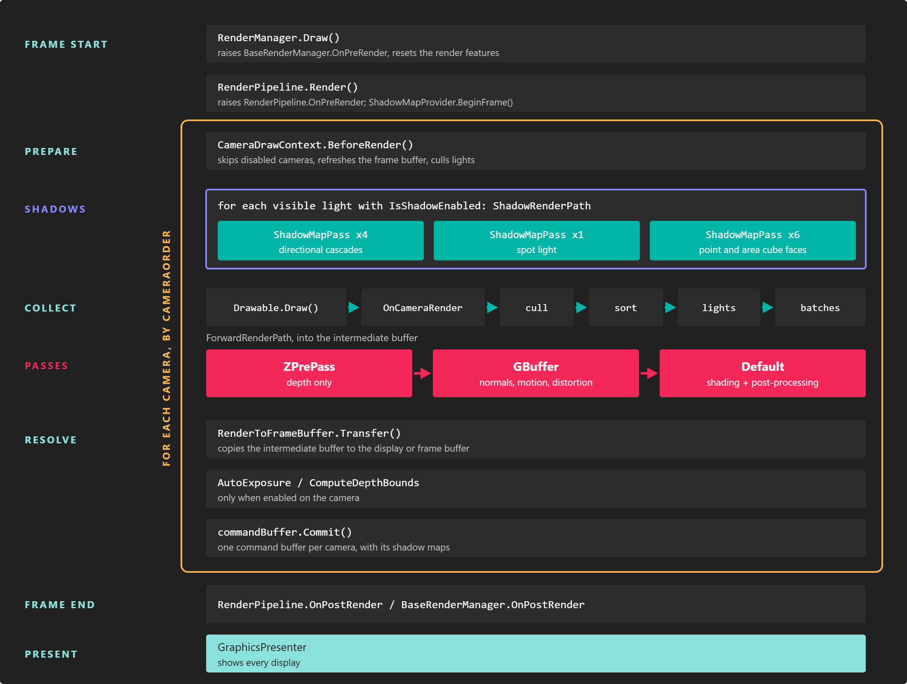
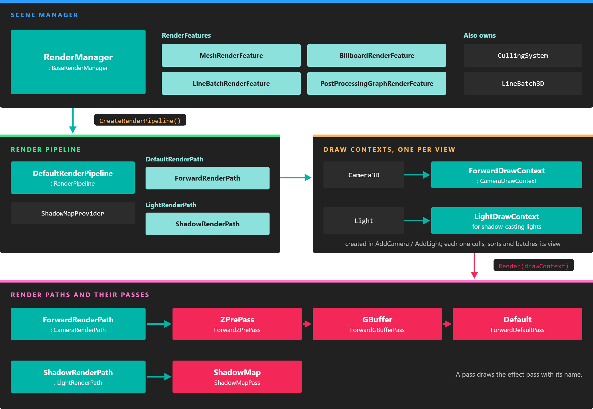

Rendering Overview

Every scene has a render manager that turns its entities into an image each frame. It gathers what can be drawn, hands it to a render pipeline that decides which views to render (cameras, and lights for their shadow maps), and each view is drawn by a render path: an ordered list of render passes that record commands for the GPU through the low-level API.
You never need to touch this machinery to build a scene: cameras, lights, meshes and materials plug into it automatically. This page explains how it works so you can reason about performance, write effects for the right passes, hook your own code into a frame, or replace parts of the pipeline.
The pieces

The render manager owns the pipeline and the render features. The pipeline creates one draw context per camera and per shadow-casting light, and each draw context is rendered by a render path made of passes.
| Class | Role |
|---|---|
RenderManager |
The scene manager for rendering (namespace Evergine.Framework.Managers). It keeps the lists of cameras, lights and drawables, owns the render features and the LineBatch3D, and creates the render pipeline in CreateRenderPipeline(). Its base class, BaseRenderManager, is what this.Managers.RenderManager returns. |
RenderFeature |
Holds the render objects of one kind and the mesh processors that turn them into batches. The render manager registers four: MeshRenderFeature, BillboardRenderFeature, LineBatchRenderFeature and PostProcessingGraphRenderFeature. |
RenderObjectInfo |
One thing to draw: a mesh with its material, a billboard, a line batch or a post-processing graph. Drawables such as MeshRenderer add them to the render manager. |
RenderPipeline |
Decides what gets rendered each frame and in which order. The default is DefaultRenderPipeline. |
DrawContext |
One view of the scene: a CameraDrawContext for a camera, a LightDrawContext for a light's shadow map. It performs culling, sorting and batching for that view. |
RenderPath |
How a view is rendered: a CameraRenderPath for cameras (ForwardRenderPath by default) or a LightRenderPath for lights (ShadowRenderPath). |
RenderPass |
One step of a render path. Its name selects the pass of each effect that is used, so a material is drawn in a pass only if its effect defines a pass with that name. |
CullingSystem |
Decides which objects and lights a view can see. The default FrustumCullingSystem tests bounding boxes against the view frustum. |
One frame
The render manager draws every frame after the scene has been updated. For each camera, in CameraOrder:
- Prepare the camera. A disabled camera, or one without a target, is skipped. The camera refreshes its matrices and its frame buffer, and the lights it can see are culled.
- Render shadow maps. For each visible light with
IsShadowEnabled, the pipeline renders its shadow map with theShadowRenderPath: four cascades for a directional light, one view for a spot light, six cube faces for point and area lights. Spot, point and area light shadows are rendered once per frame and shared by every camera; directional cascades are refitted for each camera. - Collect. The camera's draw context calls
Drawon every active drawable, raisesOnCameraRender, culls the render objects against the frustum, sorts them by render layer, material and distance, assigns lights to them and groups compatible ones into batches. - Render passes. The
ForwardRenderPathruns its three passes into the camera's intermediate buffer:- ZPrePass writes depth for opaque geometry, so the default pass shades each pixel only once. It is off on WebGL.
- GBuffer writes normals, roughness and metallic, motion vectors and distortion for post-processing. It only runs on Windows and when the camera renders through an intermediate buffer.
- Default shades everything, in render layer order. The post-processing graph of the camera runs as the last batch of this pass.
- Resolve. The intermediate buffer is copied to the camera's final target, a display or a frame buffer, and auto exposure and depth bounds are computed if enabled.
Once every camera is rendered, the graphics presenter shows the result on each display.
Important
Shadow views collect the scene too, so a drawable's Draw method runs once per camera and once per shadow view, every frame. Keep Draw cheap and do per-frame logic in a Behavior instead.
The intermediate buffer
A camera whose target has an intermediate buffer associated (every swap chain does, except on WebGL 1) renders first into an offscreen buffer of its own. It is 16-bit floating point when HDREnabled is on, so bright values survive until tone mapping, and it is what makes the GBuffer pass and post-processing possible. Without one, the camera renders straight into its target in low dynamic range, which is faster but skips both.
For a frame buffer you create yourself, set FrameBuffer.IntermediateBufferAssociated to decide. See Render to a texture.
Directives from the pipeline
The pipeline adds preprocessor directives to every effect it compiles, so shaders can adapt to the scene without the material knowing: whether shadows are supported and which filter is used, whether the scene has point, spot or area lights, whether the camera renders several views for XR, and more. Effect Metatags lists them.
Hook into a frame
The pipeline raises events at each stage. Subscribe to them to run code at the right moment without replacing anything.
| Event | Raised |
|---|---|
BaseRenderManager.OnPreRender / OnPostRender |
Once per frame, before and after the pipeline renders. |
RenderPipeline.OnPreRender / OnPostRender |
Once per frame, before the first view and after the last one. |
RenderPipeline.OnCameraRender |
For every draw context (each camera and each shadow view) after its drawables have been drawn and before culling. The argument is the DrawContext. |
DrawContext.OnPreRender / OnPostRender |
Around the passes of one view, with the CommandBuffer being recorded, so you can add your own GPU work. |
BaseRenderManager.OnAddCamera, OnRemoveCamera, OnAddLight, OnRemoveLight, OnAddDrawable, OnRemoveDrawable |
When the lists of the render manager change. |
This component marks the point each camera is focused on, which helps when tuning depth of field. It uses OnCameraRender because the handler receives the draw context of the view being rendered:
using Evergine.Common.Graphics;
using Evergine.Framework;
using Evergine.Framework.Graphics;
using Evergine.Framework.Managers;
using Evergine.Mathematics;
public class FocusPointGizmo : Component
{
[BindSceneManager]
private RenderManager renderManager = null;
protected override void OnActivated()
{
base.OnActivated();
this.renderManager.RenderPipeline.OnCameraRender += this.OnCameraRender;
}
protected override void OnDeactivated()
{
this.renderManager.RenderPipeline.OnCameraRender -= this.OnCameraRender;
base.OnDeactivated();
}
private void OnCameraRender(object sender, DrawContext drawContext)
{
// The event is raised for shadow views too; only cameras have a focus distance.
if (drawContext is CameraDrawContext cameraContext)
{
var camera = cameraContext.Camera;
Vector3 focusPoint = camera.Position + (camera.Transform.WorldTransform.Forward * camera.FocalDistance);
this.renderManager.LineBatch3D.DrawPoint(focusPoint, 0.1f, Color.Yellow);
}
}
}
Change how a camera renders
Each camera can have its own render path. A ForwardRenderPath has two switches:
| Field | Default | Description |
|---|---|---|
ZPrePassIsEnabled |
true (false on WebGL) | Run the depth prepass. Turning it off saves a geometry pass in scenes with little overdraw. |
GBufferPassIsEnabled |
true on Windows | Run the GBuffer pass. Post-processing effects that read normals or motion vectors (SSAO, SSR, TAA, motion blur) need it. |
A camera that only renders a minimap or a UI overlay can skip both. This component gives its camera a render path of its own:
using Evergine.Framework;
using Evergine.Framework.Graphics;
using Evergine.Framework.Managers;
public class LightweightRenderPath : Component
{
[BindComponent]
private Camera3D camera = null;
[BindSceneManager]
private RenderManager renderManager = null;
private ForwardRenderPath renderPath;
protected override bool OnAttached()
{
if (!base.OnAttached())
{
return false;
}
this.renderPath = new ForwardRenderPath(this.renderManager)
{
ZPrePassIsEnabled = false,
GBufferPassIsEnabled = false,
};
// Registering the path lets the pipeline dispose of it with the scene.
this.renderManager.RenderPipeline.AddRenderPath(this.renderPath);
// Assigning the path makes the pipeline rebuild the camera's draw context with it.
this.camera.RenderPath = this.renderPath;
return true;
}
}
Each camera draw context of the forward path also exposes ZPrePassIsEnabled and GBufferPassIsEnabled, to change a single camera without a new path: (camera.DrawContext as ForwardDrawContext).GBufferPassIsEnabled = false.
Two more camera properties change what a view contains: TagFilter limits it to entities with a given tag, and CullingSystem replaces the culling system for that camera, for example with a DummyCullingSystem that culls nothing. See Cameras.
Replace the render pipeline
For deeper changes, derive your own render manager and override CreateRenderPipeline(). Deriving from DefaultRenderPipeline keeps shadows, lighting and the forward path and lets you add to them; deriving from RenderPipeline starts from nothing.
using System;
using Evergine.Framework;
using Evergine.Framework.Graphics;
using Evergine.Framework.Managers;
public class MyRenderPipeline : DefaultRenderPipeline
{
public long RenderedCameras { get; private set; }
public override void RenderSingleCamera(CameraDrawContext cameraContext)
{
base.RenderSingleCamera(cameraContext);
this.RenderedCameras++;
}
}
public class MyRenderManager : RenderManager
{
protected override RenderPipeline CreateRenderPipeline()
{
return new MyRenderPipeline();
}
}
public class MyScene : Scene
{
public override void RegisterManagers()
{
// Registered first, so the base class sees a RenderManager and does not add the default one.
this.Managers.AddManager(new MyRenderManager());
base.RegisterManagers();
}
}
A custom CameraRenderPath overrides CameraRender(CameraDrawContext, CommandBuffer) and fills Passes with its own RenderPass subclasses. Each pass is matched by name to the passes of the effects, so a pass called Outline draws the materials whose effect has a [Begin_Pass:Outline] block. The low-level API documents the command buffer those passes record into.
Tip
To draw a new kind of object rather than to change how views are rendered, a custom RenderFeature registered with RenderManager.RegisterRenderFeature is usually enough.